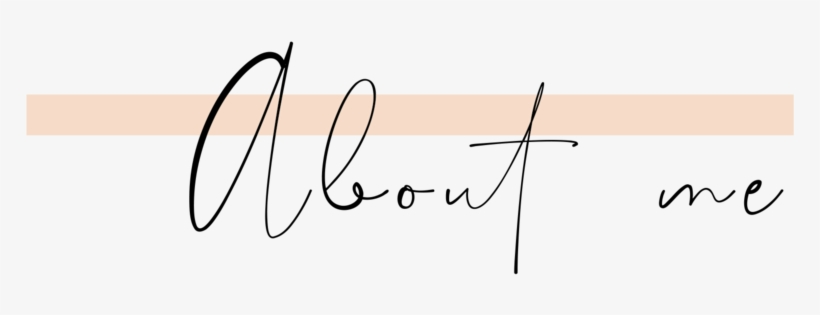
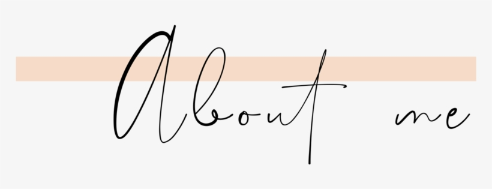

Hey There!
Thank you for stopping by on my page. First, I am a mother of two daughters. I am originally from Turkey. But I have been living in US for about ten years. I was an accountant before. But then, I discovered that I am very into technology and decided to learn coding and become a software developer. Most of the time I am studying for my goals being a developer and started a new instagram page to show people my progress and provide motivation for those who want to learn coding and start a new career like me. If you would like to check my account click here. Apart from that, I love to discover new places and see new things with my family. Every weekend, we try to discover new places in Austin, where we recently moved to. I am also very interested in web design, fashion and home decor. I love tracking and biking. Being in touch with nature is essential for me. If you want to know more about me, don't forget to follow me on Instagram !